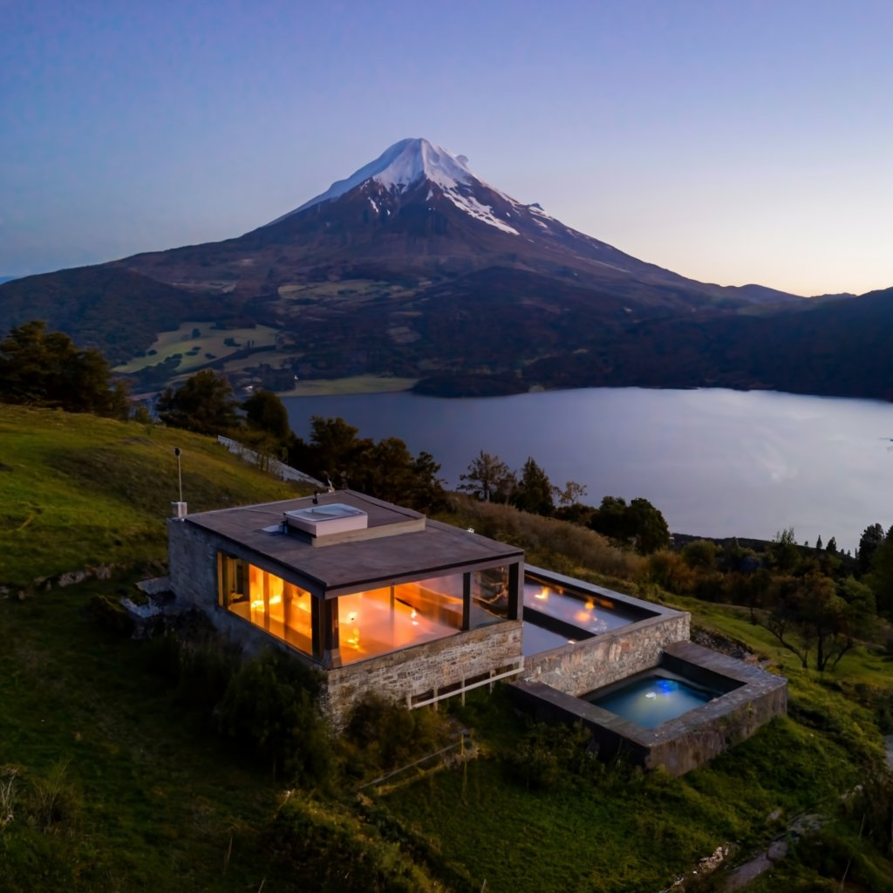

Hotel u hostería
Una opción para descansar con servicios. Consultá ubicación, desayuno, calefacción y política de cancelación.
 Montañas
MontañasElegí dónde dormir según los recorridos que querés hacer, tu movilidad y los servicios que necesitás.

En un pueblo tenés más opciones de transporte y servicios. En un refugio o camping, la experiencia y la logística cambian: confirmá reservas, equipamiento y accesos antes de salir.
Esta guía orienta tu búsqueda; no realiza reservas ni recomienda establecimientos específicos.
Una opción para descansar con servicios. Consultá ubicación, desayuno, calefacción y política de cancelación.
Para organizar comidas y compartir espacios. Verificá acceso, cocina, ropa de cama y distancia a comercios.
Confirmá habilitación, reserva, agua, sanitarios y equipo necesario. No supongas que habrá proveeduría o electricidad.
Compará las bases de cada destino antes de reservar. Considerá cuánto tardás en llegar al inicio de los recorridos y cómo vas a volver.
Consultar bases por destino ↗